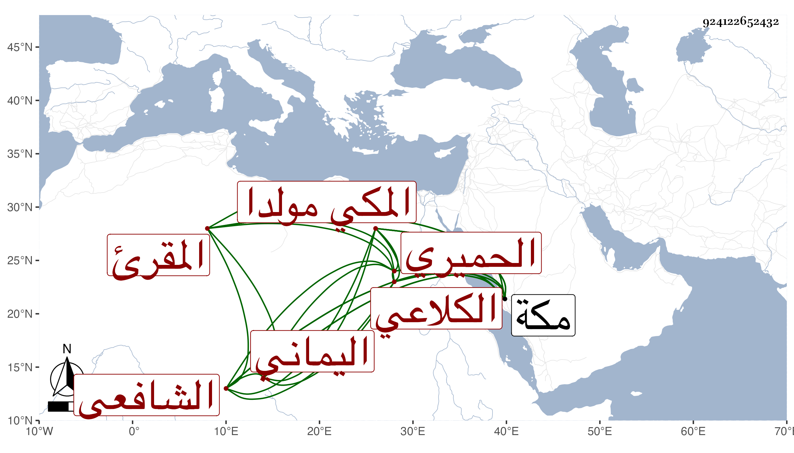

0902Sakhawi.DawLamic.ITO20230111-ara1.EIS1600.924122652432
Biography ID: 924122652432
601
علي بن أحمد بن علي بن عمر بن أحمد بن أبي بكر بن سالم نور الدين ابن الشهاب أبي العباس الكلاعي الحميري اليماني المكي مولدا الشافعي الماضي أبوه والآتي أخوه محمد ويعرف بابن الشوائطي بمعجمة وتحتانية ثم مهملة المقرئ . ولد في سابع جمادى الأولى سنة عشرين وثمانمائة بمكة ونشأ بها فحفظ القرآن والشاطبيتين وبهجة الحاوي وغالب ألفية النحو وقطعة من ألفية ابن معطى وسمع علي ابن الجزري والتقي الفاسي وابن سلامة في آخرين من أهل مكة والقادمين إليها كالولي العراقي سمع منه ما أملاه بها في ذي الحجة سنة اثنتين وعشرين وأطلق كاتب الطبقة سماعه فأما أن يكون سها في كونه حضورا أو يكون مولده قبل ومما سمعه على ابن الجزري نحو نصف عدة الحصن الحصين له بل حضر عليه في الرابعة أحاسن المنزلة وهو ممن سمع على شيخنا وأجاز له جماعة واشتغل علي أبيه في الفقه والعربية وغيرهما بل تلا عليه للسمع وأذن له وكتب عنه صاحبنا ابن فهد من نظمه وكذا لقيته بمكة في عدة مرار فكتبت عنه قوله :
| بادر إلى الخير يا ذا اللب واللسن | واشكر لربك ما أولى من المنن |
| وارحم بقلبك خلق الله كلهم | ينلك رحمته في الموقف الخشن |
وقوله أيضا :
| بادر إلى الخير يا ذا اللب واسع به | لكل خل تراه ناله العدما |
| واشكر لربك ما أعطيت من نعم | تنال رحمته في موقف عظما |
وكتب على بعض الاستعدعاءات بل حدث في سنة ثلاث وتسعين ونسخ فيها وفي التي تليها أشياء من تصانيفي وأخذ عني ومدحني بأبيات ولا يخلو من فضيلة .
